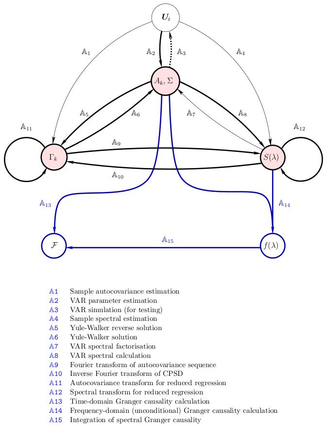

The MVGC Multivariate Granger Causality Matlab® Toolbox
Poster
presented at
ASSC 16
Documentation (v1.0)
Download

©
Lionel Barnett* and Anil K. Seth**, 2012. See file
license.txt
for licensing terms.
*
**